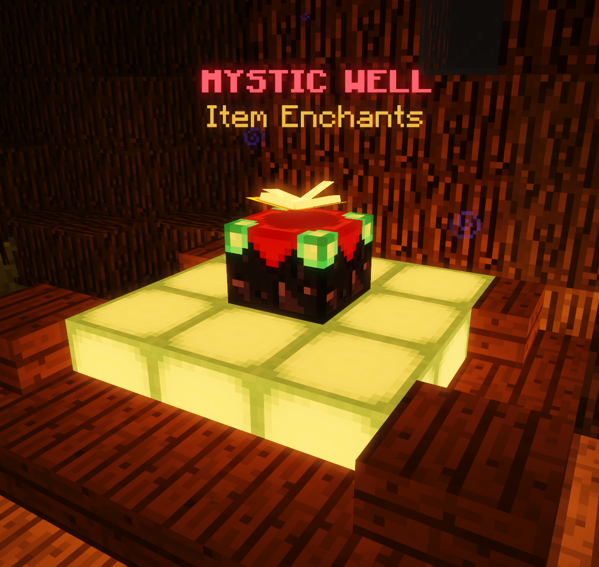
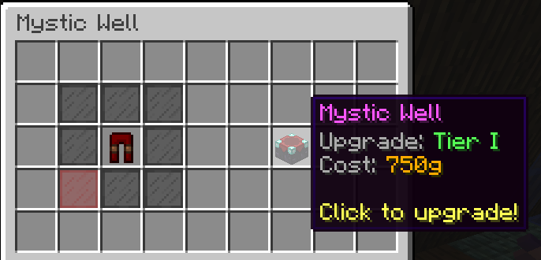
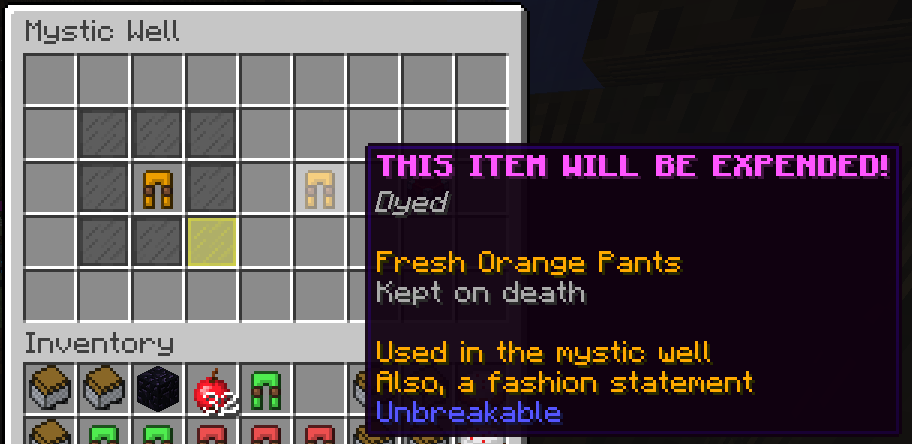

|  |
| The Mystic Well as it appears in game. It is located in the spawn area of every map, including faction spawns on Genesis. |
The Mystic Well is a structure in the spawn area of all Pit maps. It can be used to enchant mystic items.
Players with the Mysticism renown upgrade can right click the Mystic Well to open the Mystic Well menu. While in the menu, they can click on mystic items (excluding the Archangel Chestplate, Armageddon Boots and Golden Helmet) in their inventory to place them in the well.
If the item is not at its maximum tier, players can spend gold to upgrade it. The Scam Artist upgrade can decrease the amount of gold required. When upgrading to the maximum tier, items will require a sacrifice of another item of the same type, with the exception of swords and bows, which require a sacrifice of a random standard color of pants.
|  |
|  |
| Top: The Mystic Well's menu. Below: A mystic item being sacrificed. |
The following items can be enchanted:
| Item | Cost | Requirements |
| Fresh Pants Mystic Pants (standard color) | Tier I: 1,000g | Mysticism IX |
| Tier II: 4,000g | ||
| Tier III: 8,000g and a sacrifice of pants of the same color | ||
| Mystic Sword | Tier I: 1,000g | Mysticism I |
| Tier II: 4,000g | Mysticism I | |
| Tier III: 8,000g and a sacrifice of pants of a random standard color | Mysticism IV | |
| Mystic Bow | Tier I: 1,000g | Mysticism I |
| Tier II: 4,000g | Mysticism I | |
| Tier III: 8,000g and a sacrifice of pants of a random standard color | Mysticism IV | |
| Aqua Pants | Tier I: 5,000g | Mysticism I |
| Dark Pants | Tier I: 10,000g | Mysticism I |
| Tier II: 60,000g and a sacrifice of Dark Pants of any tier | Heresy II[bug] Mysticism IX |
|
| Sewer Pants | Tier I: 150g | Mysticism I |
| Rage Pants | Tier I: 1,000g | Mysticism IX |
| Tier II: 4,000g | Mysticism IX | |
| Tier III: 8,000g and a sacrifice of Rage Pants of any tier | Mysticism IX |
The total number of enchant tiers on an item is referred to as 'tokens' by the community. Tokens are calculated by adding the tier of every enchantment on the item (e.g. a sword with Shark II and Gold Boost III would have 2 + 3 = 5 tokens.) When upgrading to tier I, Mystic Swords, bows, and pants gain 1–2 tokens of a low-grade enchantment, when upgrading to tier II, they gain 1–2 tokens of any enchantment, and when upgrading to tier III, they gain 1–4 tokens – up to 8 total.
Certain resource enchantments are universal to standard mystic items (Mystic Bows, Mystic Swords, and standard colors of Mystic Pants). They are listed below:
| Sweaty | I: Increase the streak XP bonus by 20%. |
| II: Increase the streak XP bonus by 40%. +50 max XP on kill. | |
| III: Increase the streak XP bonus by 60%. +100 max XP on kill. | |
| XP Boost | I: Earn +10% XP on kills and assists. |
| II: Earn +20% XP on kills and assists. | |
| III: Earn +30% XP on kills and assists. | |
| XP Bump | I: Earn +2 XP on kill and a reduced amount on assist. |
| II: Earn +4 XP on kill and a reduced amount on assist. | |
| III: Earn +6 XP on kill and a reduced amount on assist. | |
| Gold Boost | I: Earn +15% gold. |
| II: Earn +30% gold. | |
| III: Earn +45% gold. | |
| Gold Bump | I: Earn +4 gold on kill and a reduced amount on assist. |
| II: Earn +8 gold on kill and a reduced amount on assist. | |
| III: Earn +12 gold on kill and a reduced amount on assist. | |
| Moctezuma | I: Earn +6 gold on kills. |
| II: Earn +12 gold on kills. | |
| III: Earn +18 gold on kills. | |
| Strike Gold | I: Earn +1 gold on hit. 1 second cooldown. |
| II: Earn +2 gold on hit. 1 second cooldown. | |
| III: Earn +3 gold on hit. 1 second cooldown. | |
| Critically Rich | I: Earn +2 gold on critical hits. |
| II: Earn +4 gold on critical hits. | |
| III: Earn +6 gold on critical hits. | |
| Pants Radar | I: 30% higher chance to find mystic items on kill. |
| II: 60% higher chance to find mystic items on kill. | |
| III: 90% higher chance to find mystic items on kill. |
Trivia